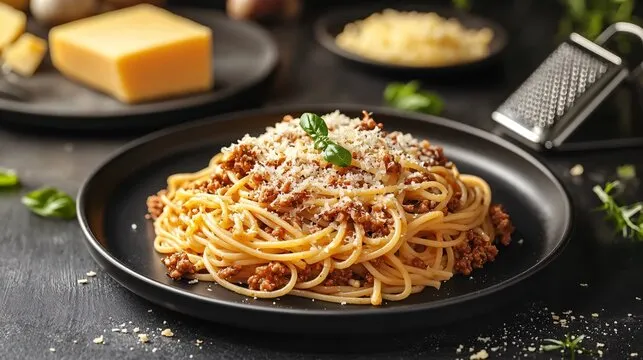

Spaghetti

Opis
Spaghetti to tradycyjny posiłek kuchni włoskiej (ciekawostką jest, że tej potrawy nie wynaleźli Włosi), jednakże nie samo danie czyni siebie tradycją, tylko makaron, który we Włoszech jest podstawą większości dań
Bardzo mało osób wie, że spaghetti to nie tylko nazwa posiłku, który dziś jest głównym tematem a też określenie “długi, cienki makaron“. Typowa włoska pasta (makaron) to proste, długie nitki, które długością mogą sięgać nawet do 80cm, tworzy się je z tzw. twardej odmiany mąki pszenicznej (pszenica durum)
Skladniki
- 500 gram wołowiny (koniecznie z naszego sklepu, inaczej będzie wam nie smakować)
- Pół papryki
- Cała cebula
- 2 ząbki czosnku
- 2 puszki pomidorów bez skórki
Jak
- Na głębokiej patelni rozgrzej około 2 łyżki oliwy z oliwek.
- Na rozgrzaną patelnię wrzuć czosnek i cebulę, a po chwili dodaj mięso, rozdrabniaj je np. widelcem, tak aby nie powstały grube mięsne grudki.
- Do mięsa dodaj zioła oraz koncentrat. Całość podgrzewaj przez chwilę, dodaj passatę (przecier pomidorowy), gotuj na małym ogniu około 30 minut.
- Makaron ugotuj al dente, podawaj go z sosem, serem, i bazylią.